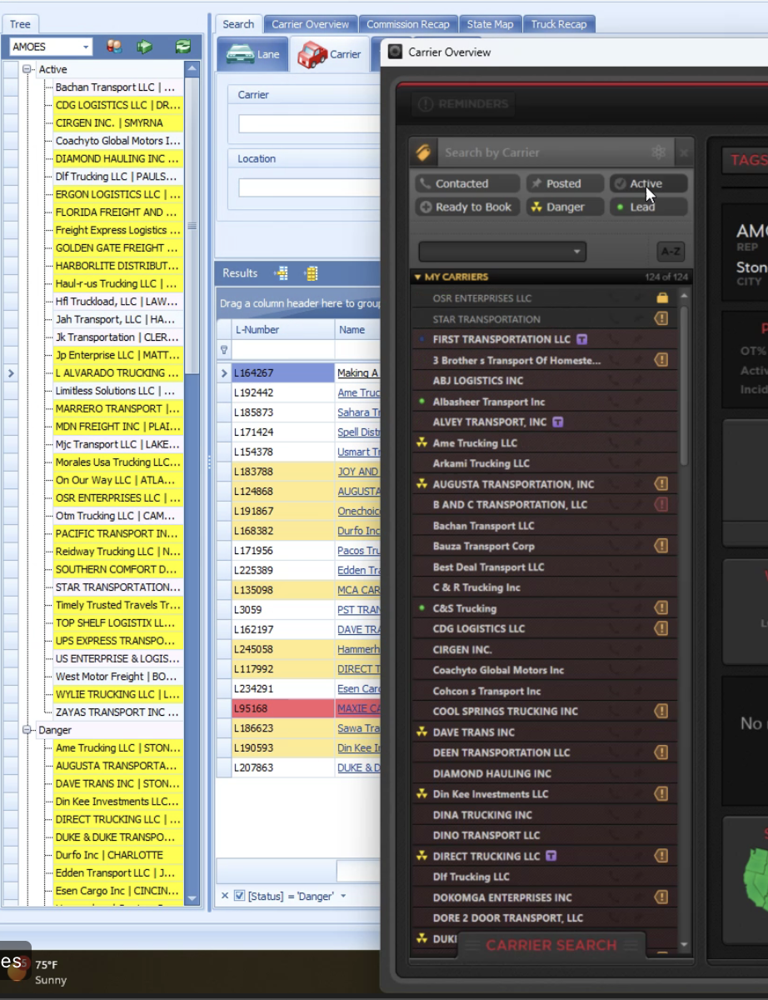
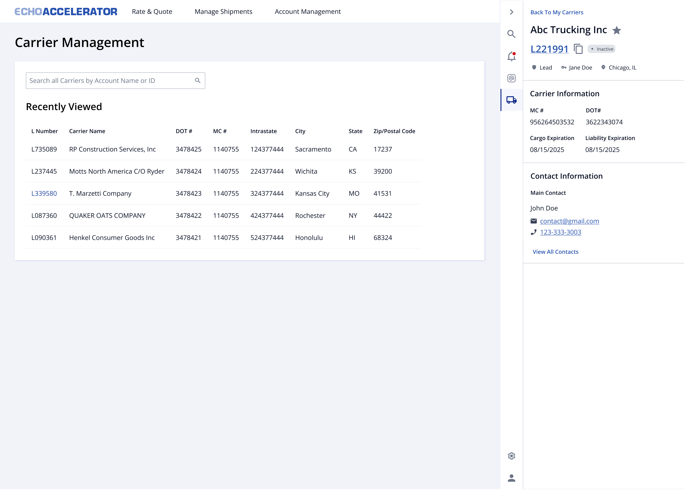
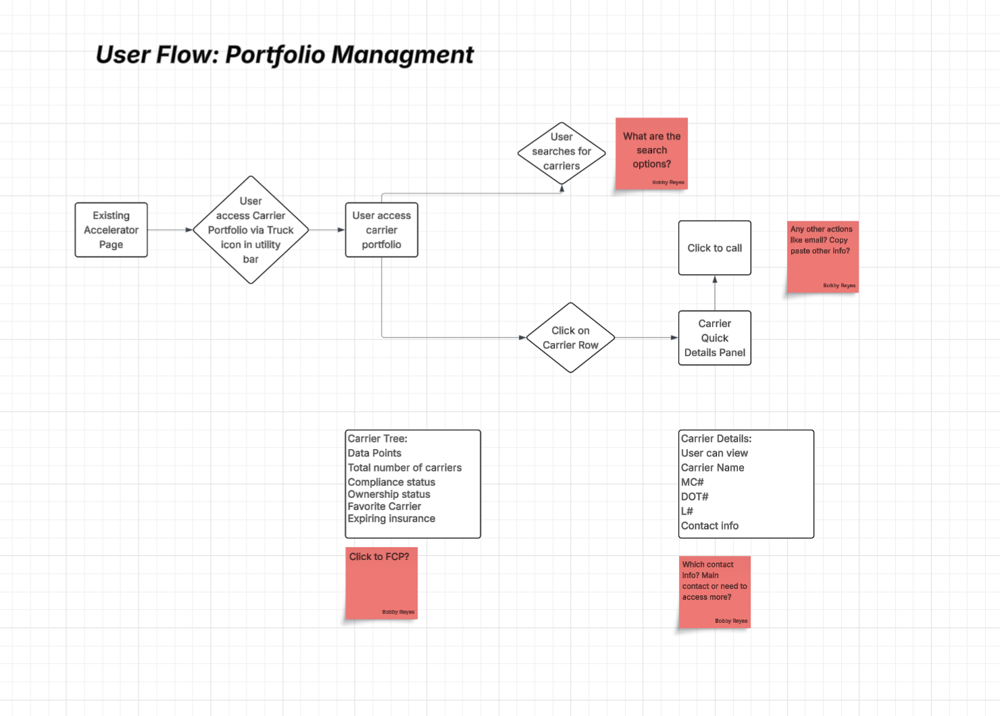
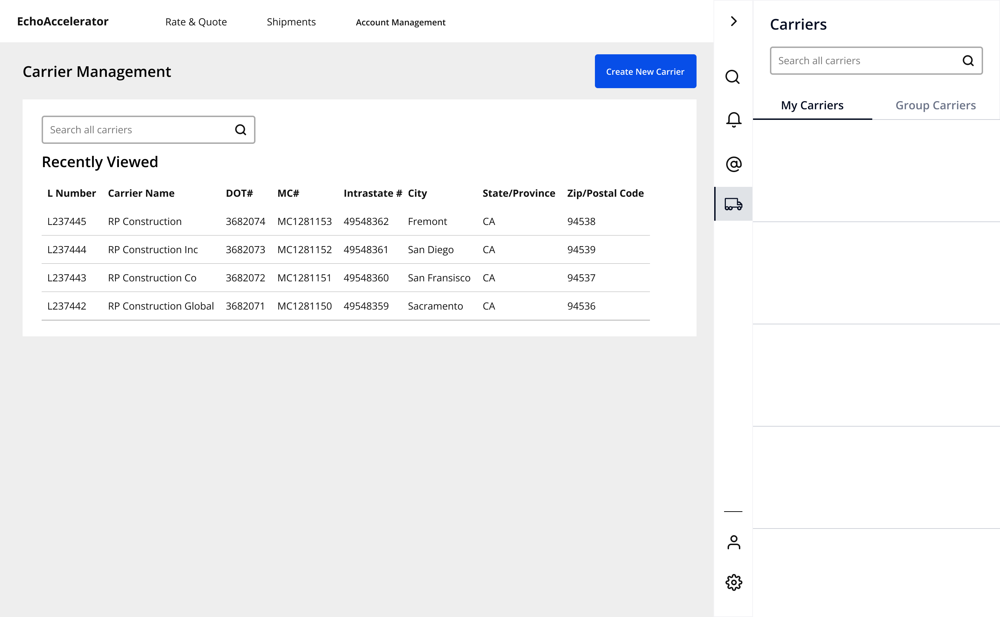
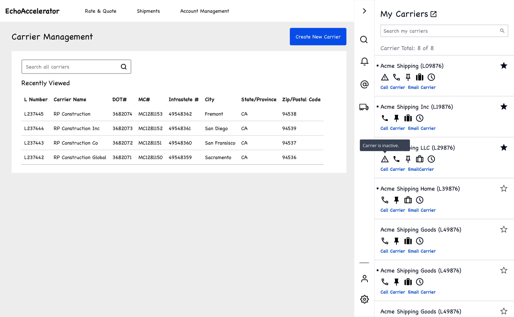
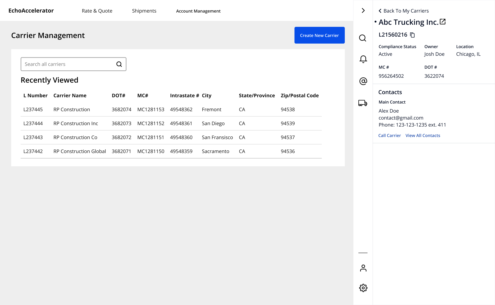

UX Design • Enterprise Software
Echo Global Logistics
Turning a carrier list into a book reps could trust was safe to work, without losing the ability to call and email carriers directly.

Turning a carrier list into a book reps could trust was safe to work, without losing the ability to call and email carriers directly.
Echo is an asset-light freight broker: it sells space on a truck to a shipper, then pays a trucking company less than that to actually haul the load, and keeps the difference. Volume comes from sales; margin comes from carrier relationships. But Echo's carrier network was wide and shallow. It had tens of thousands of carrier records, but a large share of loads got covered by re-shopping the spot market rather than re-loading a carrier Echo had already onboarded and priced with. I designed My Carriers, moving the concept of a rep-owned book into Accelerator, the tool carrier sales actually worked in every day, and turning it from a passive list into a book reps could trust was safe to call, email, and book.
A rep couldn't answer "who's mine, who can I legally use today, and who has a truck near this load" without stitching together three or four screens.
Every time a load needed a carrier, Echo re-negotiated the price from scratch, even with carriers it had worked with before, instead of using an established rate, so relationships that should have compounded got spent once and forgotten. Carrier data was scattered across four different systems that didn't talk to each other, so no single view answered a rep's actual question, and the easy default was posting the load publicly for any carrier to grab, even though that always cost more than working with a carrier Echo already knew. Carriers also quietly fell out of eligibility (expired insurance, lapsed authority) with nothing surfacing it until a shipment got blocked mid-delivery. Dead capacity inside Echo's own network was the most fixable waste in the whole picture.
Here's the twist. Carrier portfolio management already existed, just split across two legacy tools, STATS and Clutch, that reps were already stitching together for everything else. Both showed a version of carrier status (Danger, Lead, Active), and a nightly job quietly computed each carrier's ownership stage behind the scenes: Lead → Opportunity → Relationship → Danger, with a 6-day countdown before a carrier under 3 booked loads in a rolling 30 days got auto-unassigned. Reps could only ever see pieces of that status, never the countdown itself, and never in one place, so plenty kept their own Excel spreadsheet just to track where they actually stood.

A rep-owned book of carriers, made actionable.
My Carriers. Every query is scoped by ownership. A Carrier Sales rep can't see outside their own book, enforced at the service layer. Search by account name or ID, with favorites pinned to the top.

Two icons, color-coded. Compliance status splits across two related shapes: a color-weighted triangle for inactive, on hold, or active, and a solid circle-slash for do not use. Insurance expiration gets its own calendar icon, since it's the one compliance problem that's actually predictable, the mark shifts from a checkmark to an X as the deadline gets closer. Both carry a hover tooltip with the specifics and, for insurance, the real date.

Group Carriers, for managers and directors. A collapsible section below My Carriers, scoped to a manager's or director's direct team, giving oversight without a separate tool or a data pull.

Detail panel. Ownership stage, owner, and location right under the header; Cargo and Liability Expiration dates in Carrier Information instead of buried in a hover. Contact info and a click-to-call main contact below.
I interviewed six people across three roles (Partials reps, Team Leads, and the managers and directors above them) over the course of a week, then used Claude to help synthesize the notes into themes. The clearest split wasn't a feature request, it was a workflow difference. Team Leads and managers work a relationship-based book of 40 to 100 carriers they call by name, while Partials reps work transactionally, load by load, and don't track carrier ownership at all.
The working assumption going in was that Favorites would solve access for every non-owning role the same way. The requirements explicitly framed it as a fix for reps whose "role doesn't require ownership over specific carriers." Research said otherwise. For a Partials rep, "favorite" doesn't hold still long enough to mean anything:
“For me, my favorite carrier is the one at the moment when I have the load. So this favorite thing literally doesn't do me any good. I'm not sure exactly how that would help even.”
Marcus T. Partials RepThe workflow split from earlier showed up again and again. One Partials rep said his team didn't track or manage ownership status at all, relying instead on a memorized top-3 list of carriers, and asked for an On Hold status instead.
Team Leads reacted the opposite way. Group Carriers itself was already scoped as a requirement, managers needed to see their team's carriers. What the interviews sharpened was the model underneath it: reps see only their own carriers, managers see their direct reports', and directors see everyone below them, a three-tier hierarchy nobody had specified yet, because that was already how they thought about their teams.
A separate finding came out of the same interviews. Insurance timing needed real calibration, not just an alert. A 9-year rep wanted a full week of notice, since carriers tend to wait until the last minute to renew. A 14-day warning arrived too early to mean anything; 7 days was the number that came up as right. Not everyone wanted the nudge at all, one Team Lead was fine letting the existing compliance block catch it at booking time instead. The shipped threshold was re-tuned after launch to exactly that number.
Before any screens, I mapped out how a rep gets from the existing Accelerator page into their portfolio, then either searches or scans the list and clicks into a carrier. I left open questions right on the flow itself, like what search should actually match on, what else besides calling should be one click away, and which contact info actually needs to surface. Those were the questions the wireframes and prototype had to answer.

The starting user flow, with the open questions I flagged for myself before wireframing.
From there I moved to low-fidelity wireframes, covering the list, the detail flyout, the status-icon system, and the tabs separating My Carriers from Group Carriers. Normally the next step is a slow one, build a polished Figma prototype, then find time on reps' calendars to walk through it. Instead, I used those wireframes to prompt an AI tool (Lovable) into a working interactive prototype in a fraction of the time, so I could put something clickable in front of real reps immediately instead of a static mockup.



Fig. 1–3: Low-fidelity wireframes used to prompt the AI-generated interactive prototype below.
A working prototype, not a click-through: try the search, the truck icon, favoriting, and clicking into a carrier.
This wasn't a replacement for the high-fidelity design. That still had to happen, spec'd and dev-ready, for the actual engineering handoff. What it replaced was the slow part before that, guessing at direction instead of testing it. What came back from reps using this prototype shaped the high-fidelity version that shipped.
One list, not separate tabs. The original plan split My Carriers, Group Carriers, and Unowned into tabs. Manager and director interviews changed the first two, their own carrier counts topped out around 30, small enough that tabs added a click without adding clarity, so the shipped version uses one list with collapsible My Carriers and Group Carriers sections instead. Unowned didn't make the cut at all. Since no rep owns those carriers, they were never going to live inside a rep's own book. That's Carrier Prospecting's job, a separate tool built for exactly that.
Give managers the team view, not just their own book. The Group Carriers section fans the same ownership query across a manager or director's direct team, so oversight didn't require a separate tool or a data pull.
Two questions, two icons: never blended into one. "Can I use this carrier?" (compliance: Active, Inactive, On Hold, Do Not Use) and "what's my relationship with them?" (ownership: Lead through Danger) are computed independently and never merge into a single status. Compliance renders as one icon, color-weighted grey through red; insurance expiration gets its own calendar icon, separate, because it's the one compliance problem that's actually predictable, it lapses on a known date. A "safe to use" green affirmative icon, complete with its own tooltip ("Safe to use carrier"), existed at launch and was removed afterward. It added noise on the common case instead of reserving color for the exception.
Give non-owning roles a second way in. Ownership isn't how every rep works. Specialized Services and Partials reps generally don't own carriers at all. Favorites let any rep, in any role, pin any carrier (owned or not), so a list still exists for roles the ownership model was never built for. Typeahead backs it up, reaching every carrier profile so a rep can still pull one up they haven't favorited yet.
My Carriers shipped, and the clearest signal of how well it worked came a month later, in a structured round of feedback from the reps actually using it. It told me exactly what MVP speed had cost us.
The highest-impact gap was filtering. Reps couldn't narrow their book by location and radius, compliance flags, insurance thresholds, or ownership and carrier status, the core unlock for making a 500-carrier list usable at all.
Close behind was legibility. The list wasn't actionable at a glance, so reps were clicking into individual profiles just to see compliance status that should have been visible inline, and the ownership status dots themselves were too small to register at a glance.
Reps also confirmed something I'd flagged myself, the danger countdown didn't exist in the panel. Carriers close to auto-unassignment were only flagged by email, disconnected from the tool reps actually worked in.
There was also a foundational fix underneath all of it, some carrier profile features weren't being used simply because reps didn't know they existed. The color-coded icon system and the enriched detail panel in Design above are the direct response, legibility and insurance visibility got fixed; the countdown itself is still the gap I'd go after next.
Longer-term, the metric that actually tests whether this feature is worth its cost is carrier cost per load: net revenue per load, normalized for lane, equipment, and market. A carrier-side tool can't move the sell rate, so the buy rate is the only money lever it has.
Before the cost savings would even show up, you'd expect to see more loads going to carriers Echo already knows instead of new ones off the spot market. The ownership data already tracks that without building anything new, how many carriers in a rep's book stay in the healthy Relationship stage instead of sliding into Danger, and how often carriers get dropped entirely. That data doesn't exist yet; the feedback above is the real signal I have.
If I'm honest, giving reps visibility wasn't the same as giving them agency. Compliance status works because it's genuinely a state: grey, yellow, orange, or red tells a rep everything they need, and the icon is a complete answer. Ownership status isn't a state, it's constantly counting down toward a deadline, and the UI shows it like it's just as stable. Take the "Danger" chip. A carrier in Danger has a real countdown behind it, 6 days before it gets automatically unassigned unless it gets back to 3 booked loads in the last 30 days, but none of that ever reaches the screen, a rep just sees the word "Danger."
When a carrier's clock runs out, it falls into Unowned with no queue and no claim action. Claiming one back is still possible, but it means leaving My Carriers for Carrier Prospecting, a detour instead of a decision made where the rep already is. A chip doing the job of a countdown is the clearest gap left in this design, and it's the next version I'd build.
The daily-task layer I designed early on (had they called this carrier today, posted a truck, booked a load) is still something reps need, it just didn't make it into MVP scope.
The other thing I'd want to verify before building it is whether sticking with a carrier Echo already knows actually saves money compared to just posting the load and taking whatever the market offers. That's the assumption the whole feature rests on, and it's checkable from historical pricing data, so it should be checked before more design work, not after. If it turns out visibility was never the real problem, a better panel won't move margin no matter how well it's designed.